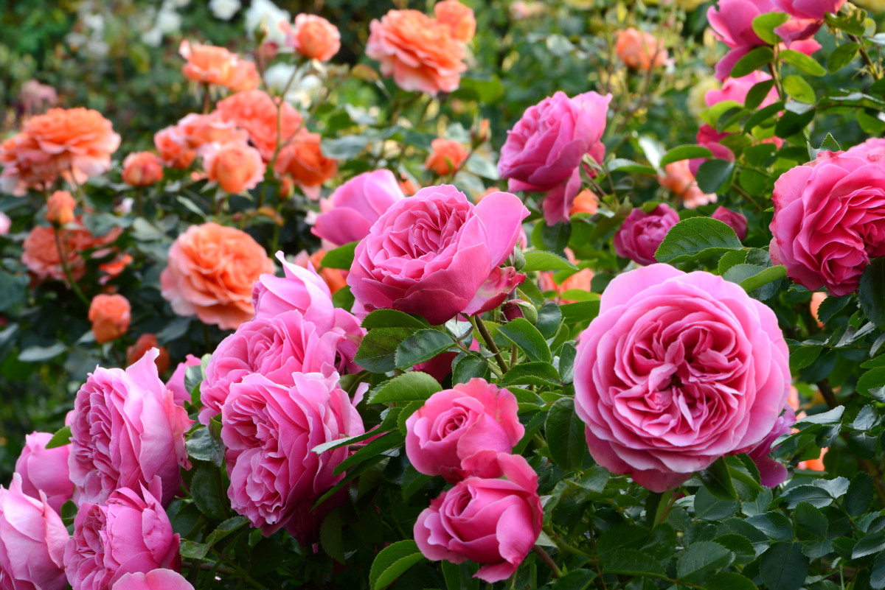

Qizilgül — dekorativ çiçək yetişdirmədə gülçiçəklilər fəsiləsinin itburnu cinsinə aid mədəni bitki növlərinin qəbul olunmuş adi. Qzilgülün kök sistemi milvaridir və torpağin 5 m dərinliyinə kimi işləyir. Çoxgövdəli olmaqla, budaqlidir. 1,5-2 m hündürlükdə koldur, yaşil və ya qirmizi-yaşil tikanli gövdəsi vardir. Yarpaqlari gövdə üzərində növbə ilə yerləşir. İri kolunda 800-1000 ədəd çiçək əmələ gəlməklə, çiçəyində 60-120 ləçək olur. Ətraf mühitdən asili olaraq, efiryağli qizilgül 30-50 il ömür sürür. Bu dövrdə bitkinin budaqlari tez-tez dəyişir. Qizilgüldə iki tip çoxillik budaqlar: əsas və ya anac və boyu tükənən budaqlar mövçuddur. Beş tip birillik zoğlari (boy-verən, vaxtsız çıxan, yağlı, generativ və silleptik) vardir. Əsas və ya anac budaqlar 5–6 yaşda olub, üzərində güçlü inkişaf etmiş boy və generativ zoğları daşıyır. 1 kq qızılgül yağı almaq üçün əl ilə 4 ton qızılgül ləçəkləri toplamaq lazım gəlir. Qəribə deyil ki, onun bir kiloqramının qiyməti 5000 yevrodan bahadır. Dünyada qızılgül yağı istehsalının 70%-i Bolqarıstanın payına düşür.
